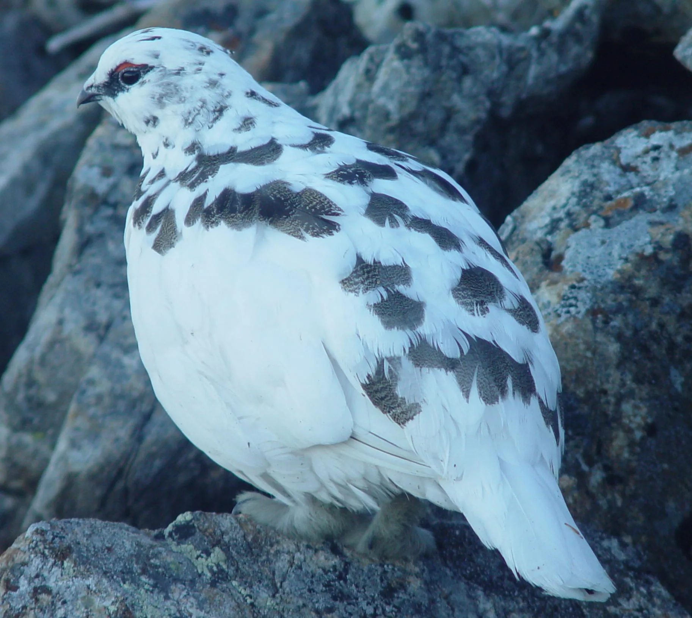

Why does Japan's rock ptarmigan change colour three times a year?
On the highest ridgelines of the Japanese Alps — above 2,400 metres, where the forest gives up and only alpine scrub survives — lives a bird that has been solving the same problem for roughly 20,000 years: how to stay invisible on a mountain that changes colour with the seasons. The raichō (雷鳥), Japan's rock ptarmigan, answers this by moulting its entire body three times a year, cycling from pure white to near-black to mottled brown and back again. It is the southernmost population of this species on Earth, stranded on mountaintops since the last ice age, and it is now endangered. This is the real biology of a colour-changing bird, and what it reveals about camouflage as a design problem. (The Japanese words are included throughout.)

An ice-age relict stranded on mountaintops
The rock ptarmigan (Lagopus muta) is a circumpolar bird — found across the Arctic tundra of Scandinavia, Russia, Alaska, and Canada, always at the cold, treeless edge of the world. Japan's population, the subspecies Lagopus muta japonica, is the strangest outlier: it lives roughly 2,000 kilometres south of any other rock ptarmigan population, confined entirely to the alpine zone of the Japanese Alps (Northern, Central, and Southern) at altitudes of 2,400–3,000 m. It got there by accident of geological timing. During the last glacial period, cold tundra-like conditions extended much further south across the Japanese archipelago, and ptarmigans spread with it. When the ice retreated roughly 10,000–20,000 years ago, the cold habitat did not disappear everywhere — it simply climbed the mountains and stayed there, an island of Arctic climate surrounded by temperate forest. The birds climbed with it and never came back down. Biologists call this kind of population a relict (残存個体群, zanzon kotaigun) — a fragment of a much larger range, isolated by climate change that happened millennia ago rather than currently.
Photoperiod, not temperature, drives the change
日長 — nichō (day length) · 換羽 — kan'u (moulting)
It would be reasonable to assume that a bird changes colour because it gets cold, or because snow appears. It does not work that way. The trigger is photoperiod — the length of daylight — not temperature or snow cover directly. As day length shortens through autumn, hormonal changes triggered by the pineal gland and thyroid initiate the moult (kan'u) into white winter plumage; as day length lengthens again in spring, the same hormonal pathway reverses. This is a genetically fixed calendar, not a live weather response, and it has an important consequence: if snowfall timing shifts because of a warming climate but day length obviously does not, the bird's colour and its actual background can fall out of sync. A ptarmigan can turn white two weeks before the first real snow, or stay white for weeks after early snowmelt, standing out sharply against bare brown rock. This mismatch — plumage clock versus climate reality — is one of the central problems facing colour-changing animals worldwide as seasons shift.
White, black-brown, and mottled: why the male needs three coats a year
夏羽 — natsuba (summer plumage) · 冬羽 — fuyuba (winter plumage) · 保護色 — hogo-shoku (protective colouration)
Most seasonally colour-changing animals (Arctic hares, stoats) manage with two coats a year — white and brown. The rock ptarmigan is unusual in running three distinct moults, and the reason is sexual: males and females have different jobs at different points in the year. In spring, the male moults out of pure white into a striking black-brown head, neck and breast (retaining white wings) while the female moults into mottled golden-brown — a difference called sexual dichromatism. The male's dark spring plumage is thought to function less as camouflage and more as a display and territory-marking signal during the breeding season, when standing out briefly matters more than staying hidden. Through summer, both sexes moult again into a finer mottled grey-brown-black pattern that matches bare rock and alpine vegetation — true hogo-shoku camouflage for the snow-free months, when both parents are exposed while raising chicks. Then in October–November, the third moult replaces this with the famous pure white fuyuba, retaining only black outer tail feathers and (in males) a black stripe through the eye — the only marks that break up an otherwise total match to snow.
Who is actually looking: raptors, foxes, and stoats
天敵 — tenteki (natural enemy / predator) · 猛禽類 — mōkinrui (birds of prey)
Camouflage only makes sense in relation to a real predator's visual system, and on Japan's alpine peaks the ptarmigan's main tenteki are golden eagles and other mōkinrui (raptors) hunting from above, along with red foxes and stoats hunting at ground level. Both predator types rely heavily on visual contrast against background — a raptor scanning a snowfield from altitude, or a fox tracking movement across open rock, is essentially running a background-matching detection task. A ptarmigan a shade too dark against snow, or a shade too pale against bare autumn rock, becomes a visible target rather than a hidden one. Because chicks cannot fly for their first two weeks and rely entirely on crouching and freezing, the mottled brown plumage of the female incubating and brooding through the snow-free breeding season is arguably under the strongest selective pressure of all three coats — she is on the nest, motionless, for the longest stretches, and any colour mismatch there is costly in a very direct way.
Why 1,700 birds matters more than it sounds
The Japanese rock ptarmigan population fell from roughly 3,000 birds in the 1980s to about 1,700 by the 2000s, with some regional breeding-pair counts in the Southern Alps dropping by close to half between 1981 and 2004. Japan's Ministry of the Environment raised its Red List status from Vulnerable to Endangered in 2012, and it remains a nationally protected Special Natural Monument (designated 1955), as well as the official prefectural bird of Nagano, Toyama, and Gifu. The threats are a compounding set: climate warming is pushing the alpine zone habitat itself upward and shrinking it (modelling studies project serious habitat loss under future warming scenarios for the Northern Alps population); rising temperatures also allow forest-edge predators and competing species to move higher than before, into a zone that used to be predator-sparse by virtue of being too harsh; and a parasitic coccidian genus, Eimeria (including species named E. uekii and E. raichoi, discovered specifically in ptarmigan surveillance studies), circulates in wild populations and is being monitored as part of conservation cage-protection programmes that shield chicks during their most vulnerable weeks. A relict population already confined to a shrinking island of cold habitat has very little room left to retreat to.
DNA from droppings and 100-year-old museum skins
系統 — keitō (lineage / phylogeny) · 食性 — shokusei (diet / feeding habits)
Because Japanese rock ptarmigans are legally protected and extremely difficult to approach at altitude, researchers have developed non-invasive ways to study them. One recent approach used DNA metabarcoding on faecal samples to identify exactly which alpine plants (shokusei, diet) the birds rely on in the Northern Alps, without ever needing to capture a bird or observe feeding directly. A separate line of research has sequenced mitochondrial genomes from ptarmigan museum specimens — some collected decades ago — to reconstruct the keitō (lineage) of the Japanese population relative to its Arctic relatives, confirming just how long ago the Japanese lineage split off and how genetically distinct this isolated relict has become. Both techniques matter because a captured, GPS-tagged bird changes its own behaviour under study; museum skins and faecal DNA do not.
Common questions
Q. Why does Japan's rock ptarmigan change colour three times a year instead of twice like Arctic hares?
A. Males and females have different seasonal roles. Beyond the shared white winter and mottled brown summer camouflage coats, males add a third, distinct black-brown breeding-season plumage used more for territorial display than camouflage — a form of sexual dichromatism not needed by species without this breeding display function.
Q. What actually triggers the colour change — cold weather or snow?
A. Neither, directly. The trigger is photoperiod (day length), processed through the pineal gland and thyroid hormone pathways. This is a fixed calendar cue, which means the bird's colour and the real snow cover on the ground can fall out of sync if snowfall timing shifts due to climate change.
Q. Why is the Japanese rock ptarmigan found so far from other rock ptarmigan populations?
A. It is a glacial relict. During the last ice age, cold tundra-like conditions extended across much of Japan and rock ptarmigans spread south with it. As the climate warmed after the ice age, the cold alpine habitat retreated up the mountains rather than disappearing, and the birds retreated with it, becoming isolated roughly 2,000 km south of the next nearest population.
Q. How endangered is the Japanese rock ptarmigan?
A. The population fell from about 3,000 birds in the 1980s to roughly 1,700 by the 2000s, with some regional breeding-pair counts nearly halving between 1981 and 2004. It was upgraded from Vulnerable to Endangered on Japan's Red List in 2012 and is a nationally protected Special Natural Monument.
Q. What are the main threats to the species today?
A. Climate warming is shrinking the high-altitude alpine habitat the species depends on and allowing predators and competitors to move to higher elevations than before. A coccidian parasite genus (Eimeria) circulating in wild populations is also monitored through conservation programmes that protect chicks in cages during their most vulnerable early weeks.
Alpine wildlife spots by prefecture, seasonal timing, and what to expect on the trail: our region-by-region wildlife guide. Explore all 47 prefectures by recorded species in Ikimono Quest, built from open biodiversity data.
Written by naturalists. The science here reflects established biology of the rock ptarmigan (Lagopus muta) and its Japanese subspecies Lagopus muta japonica: photoperiod-driven moult physiology, sexual dichromatism in breeding plumage, glacial relict biogeography, and documented population decline and conservation status. Population figures, Red List status, and threat assessments are drawn from published ornithological and conservation literature. Nature is full of exceptions — that is what makes it worth studying.